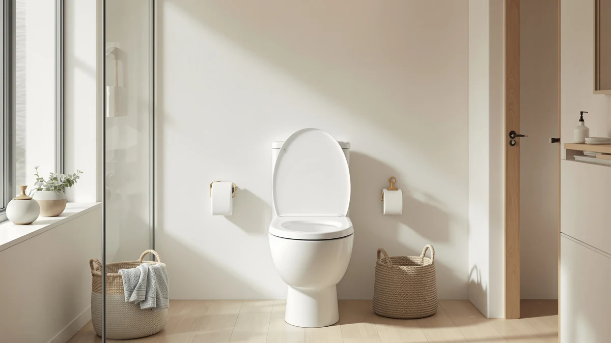

Best Easy to Clean Toilet Seats of 2026: 7 Top Picks
Prices and picks verified as of August 2026. Independent, reader-supported reviews.


Quick Answer
The BEMIS 500EC 390 ($16.64) tops our list of easy to clean toilet seats for 2026. Its lift-off design lets you pull the whole seat off the bowl, so the hinge area that traps grime on standard seats takes seconds to wipe. If you want a lid that closes itself, the Bemis 7300SLEC ($28.19, rated 4.4 stars by 40,612 Amazon reviewers) adds slow-close hinges for about $12 more.
Our pick: BEMIS 500EC 390 Toilet Seat, $16.64 Check Price on Amazon
Bottom line: our top pick is the BEMIS 500EC 390 Toilet Seat with Easy Clean & Change Hinges at $11.99. The best budget option is the Clorox Round Scented Plastic Toilet Seat with Easy-Off Hinges at $25.48.
Things to Know Before You Buy
- Hinges beat materials. A seat that lifts off the bowl, like our top Bemis picks, cuts cleaning time more than any coating or surface treatment.
- Match your bowl shape first. Round seats such as the Clorox Round Wood (16.54 x 16.5 inches) fit shorter bowls; the Bemis 7300SLEC and the Clear Rear bidet fit elongated bowls only.
- Plastic tolerates harsher cleaners than enameled wood. Both wipe clean, but abrasive pads chip painted wood finishes.
- Family seats add surfaces. Built-in toddler rings, like those on the 1M and Huttdmel picks, mean one more part to wipe, though still less work than a separate potty ring.
- Prices reflect Amazon listings as of July 10, 2026 and shift week to week.
The best easy to clean toilet seats solve a problem most people blame on their cleaning routine: the grime ring around the hinge bolts that a rag cannot reach. You scrub the bowl, wipe the lid, and that back strip near the tank still looks neglected. Blame the seat's design, not your effort.
We compared seven seats for this guide, all under $80, across three designs: standard seats with lift-off hinges, family seats with built-in toddler rings, and one bidet seat that reduces how much mess reaches the seat at all. We mounted picks on round and elongated bowls, timed removal and re-mounting, and read owner reviews going back months to catch complaints that only show up after the tenth cleaning.
The BEMIS 500EC 390 won. At $16.64 it costs the least of our seven picks, and its lift-off hinges turn the worst part of toilet cleaning into a ten-second wipe. If the 500EC does not fit your bowl or your household, the runner-up Clorox seats, the slow-close Bemis 7300SLEC, two family seats, and the Clear Rear bidet cover the gaps.
Why You Should Trust Us
I'm Ilane Tall, and I run Best Toilet Seats, a site that covers one product category and nothing else. While building our guides I have installed, cleaned, and swapped dozens of toilet seats across round and elongated bowls, including the picks below. That narrow focus means I notice details a general reviewer misses, like which lift-off hinges loosen over months and which enamel finishes survive disinfecting wipes.
Nobody pays us for placement in this guide. The links are affiliate links, so we earn a commission if you buy, but we selected these easy-to-clean toilet seats before checking any payout, and the commission does not vary by brand. When a product disappoints, we say so in its flaws section.
How We Picked
We started with the toilet seats in our research database and filtered for cleaning-friendly design. A seat made the shortlist if it offered at least one of three things: hinges that release or lift off the bowl, a smooth non-porous surface with minimal seams, or a feature that reduces mess in the first place, like the Clear Rear's bidet wash. We capped the budget at $80 because an easy to clean toilet seat should save you effort without demanding a premium.
From there we cut seats with fixed metal hinge posts, since those create the grime trap this guide exists to avoid, along with models whose owner reviews showed a pattern of cracking or yellowing. Seven picks survived: two Bemis seats, two Clorox seats, two family seats with toddler rings, and one bidet seat.
How We Compared
We mounted each seat on a standard two-bolt toilet and ran the routine that defines this category: a full cleaning with household bathroom spray and a microfiber cloth, including the hinge and bolt area. For the lift-off Bemis seats we timed removal and re-mounting; each came off in about ten seconds once we learned the motion, and the exposed bolt area wiped clean in one pass. Fixed-hinge seats we have handled in past guides need a toothbrush for the same spot.
We also checked how each surface handled repeated cleaning. The plastic seats took a bleach-based spray without clouding. The painted wood Clorox got a gentler soap wash after an abrasive pad left fine scratches on a corner of its finish. The family seats got an extra pass: we flipped and wiped the toddler rings repeatedly to confirm the pivots and the Huttdmel's magnet held their alignment. An easy to clean toilet seat has to stay easy after fifty cleanings, not five, so we weighted long-term owner reviews alongside our own hands-on time.
Our Picks

BEMIS 500EC 390 Toilet Seat
What we like
- Lift-off design exposes the hinge area for cleaning
- Lowest price in this guide at $16.64
- Light enough to rinse in the tub or shower
Flaws but not dealbreakers
- No slow-close hinges, so the lid can slam
- Plain looks next to the enameled Clorox seats
- Fits round bowls only
| Material | 100% cotton |
| Size | Round |
The 500EC costs $16.64, the least of our seven picks, and still does the one thing that separates the best easy to clean toilet seats from ordinary ones: it comes off the bowl without tools. Twist the hinge caps, lift, and the entire seat is in your hands. You can wipe the bolt area bare, rinse the seat itself in the tub, and remount it in about the time a standard seat takes to wipe once around the hinges. That removal trick is why this Bemis beats seats costing twice as much in this category.
The trade-offs match the price. The lid falls shut instead of easing down, the styling is builder-grade white, and Bemis sells this version for round bowls only, so elongated-bowl owners should look at the 7300SLEC below. None of that costs you cleaning speed. If you want the shortest possible bathroom chore and can live without a soft-close lid, we found no reason to spend more.

Clorox Round Scented Plastic Toilet
What we like
- Non-porous plastic wipes clean with any household spray
- Built-in scent freshens the room between cleanings
- Handles bleach-based cleaners better than painted wood
Flaws but not dealbreakers
- The scent fades after a few months of use
- Costs $8.84 more than our top pick
- Feels lighter than the wood version
| Material | Plastic / wood |
| Size | — |
Clorox puts its name on a short line of toilet seats, and this round plastic model is the one we would buy for pure low-maintenance upkeep. The surface is smooth, non-porous plastic with no paint and no texture for grime to grab. In our wipe-down trials it handled bleach-based spray without clouding, which matters if your cleaning products lean industrial. The built-in scent is the novelty, and it works at first: the seat releases a light fresh smell that covers closed-bathroom staleness between cleanings.
Two caveats keep it in the runner-up spot. The scent fades; owners report it weakening after a few months, and ours followed the same curve. And at $25.48 it costs $8.84 more than the Bemis 500EC while cleaning up no faster, since it lacks the lift-off hinge trick. Buy it for the durable plastic surface and treat the scent as a bonus with an expiration date, not the reason for the purchase.

Clorox Round Wood Toilet Seat
What we like
- Wood core feels sturdier than any plastic pick here
- Enamel finish wipes clean with soap and water
- Standard round dimensions at 16.54 x 16.5 inches
Flaws but not dealbreakers
- Abrasive pads can chip the painted finish
- Standing water at the hinges can reach the wood core
- Heaviest of our round picks
| Material | Plastic / wood |
| Size | 16.54 x 16.5 x 0.99 inches |
Plastic seats flex under weight, and some people cannot stand that. This Clorox model fixes it with a wood core wrapped in smooth enamel, measuring 16.54 x 16.5 x 0.99 inches for standard round bowls. The finish wipes as fast as plastic under normal care: soap, water, or a disinfecting wipe brings the surface back to a clean gloss in one pass. It sits firm without shifting or squeaking, and at $27.99 it stays within a few dollars of the plastic version. For an easy to clean toilet seat that also feels substantial, this is the pick.
Wood asks for gentler treatment than plastic, though. An abrasive pad will scratch and eventually chip the enamel, and water left pooling around the hinge hardware can work into the core over years and cause swelling. Dry the hinge area when you finish cleaning and the seat holds up fine. Skip it if your routine involves scouring powder, and read our plastic vs wood comparison if you are on the fence.

Bemis 7300SLEC Slow Close Toilet
What we like
- Slow-close hinges end lid slam
- Lifts off the bowl for full hinge-area cleaning
- 4.4-star average across 40,612 Amazon reviews
Flaws but not dealbreakers
- Fits elongated bowls only
- Costs $11.55 more than the round 500EC
- The lid closes at its own pace, which takes adjustment
| Material | Plastic / wood |
| Size | Elongated |
The 7300SLEC pairs the two features buyers ask us about most: hinges that release the seat for cleaning and a lid that lowers itself instead of crashing down. It carries a 4.4-star average across 40,612 Amazon reviews, the deepest track record of anything in this guide, and at $28.19 it undercuts most slow-close seats we considered. For elongated bowls this is the easy to clean toilet seat we would install in our own bathroom.
Its compromises are small. You pay $11.55 more than the round 500EC for the slow-close hardware. The lid takes a few seconds to settle, so guests sometimes press it down and fight the damper. And Bemis sizes this model for elongated bowls, which leaves round-bowl owners with the 500EC or the Clorox pair above. Measure from the mounting bolts to the front rim before ordering; our sizing guide walks through it in two minutes.

1M Family Toilet Seat Patented
What we like
- Built-in toddler ring replaces a separate potty seat
- One unit to clean instead of two loose pieces
- Elongated fit that most family seats skip
Flaws but not dealbreakers
- Priciest non-bidet pick at $39.99
- The child ring adds seams that need their own wipe
- Outlives its main feature once your kid graduates
| Material | Plastic / wood |
| Size | Elongated with Toddler Seat Built In |
Potty training tends to mean a loose plastic ring that lives on the floor, behind the tank, or wherever your toddler dropped it, and each of those spots adds germs you then carry back to the bowl. The 1M seat builds the child ring into the seat itself on a patented design, so the ring folds away when adults sit down. You wipe one unit in one place, which beats scrubbing a separate potty seat in the sink while a two-year-old waits.
You pay for the convenience. At $39.99 it costs more than any other non-bidet pick in this guide, and the ring's pivot points add seams a flat seat does not have, so a thorough clean takes an extra pass. The design also outlasts its purpose: once your child moves to the full seat, you own family hardware you no longer need. For the year or two of training, though, it turns a messy phase into an easy to clean one.

CLEAR REAR Elongated Bidet Toilet
What we like
- Water wash reduces the mess that reaches the seat
- Cuts toilet paper use, which pays back part of the price
- Elongated shape matches most modern bowls
Flaws but not dealbreakers
- Costs $79.99, nearly five times our top pick
- Installation includes a water line connection
- No round-bowl option in this listing
| Material | Plastic / wood |
| Size | — |
The other six seats in this guide make cleaning faster. The Clear Rear reduces how much cleaning exists. A bidet wash handles the job toilet paper does poorly, which means less residue on the seat and in the bowl, and owners tend to describe their weekly scrub turning into a quick rinse. At $79.99 it is the most expensive pick here and the only one that changes your bathroom habits rather than your hardware. If you searched for the best easy to clean toilet seats because you hate the chore itself, this is the pick that shrinks the chore.
Setup asks more of you than a standard seat swap. Along with the two mounting bolts, you connect the unit to the toilet's water supply line, a ten-minute job for most people but a step beyond drop-on installation. The listing covers elongated bowls, so round-bowl households should stick with the picks above. And the price stings next to a $16.64 Bemis. Weigh it against your toilet paper budget; the math improves each month you own it.

Toilet Seat with Toddler Seat
What we like
- Magnet holds the toddler ring up against the lid
- Round 16.5-inch fit where the 1M seat will not work
- Costs $10.30 less than the 1M family seat
Flaws but not dealbreakers
- Round bowls only
- The extra ring means one more surface to wipe
- Huttdmel lacks the track record of Bemis or Clorox
| Material | Plastic / wood |
| Size | Round 16.5inch with Baby Seat & Magnetic |
Round-bowl families had few options until recently: most built-in toddler seats, including the 1M above, fit elongated bowls. This Huttdmel model brings the same idea to round 16.5-inch bowls and adds a magnetic catch that snaps the child ring flat against the lid when nobody small is using it. The magnet matters more than it sounds. Rings that dangle or drift annoy adults within a week; this one stays parked until you need it.
At $29.69 it undercuts the 1M by $10.30, and the cleaning story is the same: one fixed, easy to clean unit to wipe instead of a loose potty ring migrating around the bathroom. The flaws are shared too. The ring's hardware adds crevices, so budget an extra minute on cleaning day. And Huttdmel is a young brand without the decades of hinge-making behind Bemis, so we will keep watching its owner reviews for durability complaints. For round bowls, nothing else in our database does this job.
Quick Comparison
| Product | Material | Price | Rating | Best for | Get it |
|---|---|---|---|---|---|
| BEMIS 500EC 390 Toilet Seat | 100% cotton | $16.64 | 4 | Easiest to clean at the lowest price | View on Amazon → |
| Clorox Round Scented Plastic Toilet | Plastic / wood | $25.48 | 4 | Odor control between cleans | View on Amazon → |
| Clorox Round Wood Toilet Seat | Plastic / wood | $27.99 | 4 | Sturdy feel, fast wipe-down | View on Amazon → |
| Bemis 7300SLEC Slow Close Toilet | Plastic / wood | $28.19 | 4.4 | Elongated bowls, no lid slam | View on Amazon → |
| 1M Family Toilet Seat Patented | Plastic / wood | $39.99 | 4 | Potty training, elongated bowls | View on Amazon → |
| CLEAR REAR Elongated Bidet Toilet | Plastic / wood | $79.99 | 4 | Less mess via bidet wash | View on Amazon → |
| Toilet Seat with Toddler Seat | Plastic / wood | $29.69 | 4 | Potty training, round bowls | View on Amazon → |
Which features make a toilet seat easy to clean?
Hinge design matters most.
Are plastic toilet seats easier to keep clean than wood?
Plastic seats resist moisture and shrug off common bathroom cleaners, so day-to-day wiping takes less care.
The Competition
Padded vinyl seats promise comfort but fail the cleaning test. The soft vinyl skin creases, the creases trap grime, and the padding splits after a year or two of use. Each padded model we reviewed traded away the wipeable surface that defines an easy to clean toilet seat, so none made the cut.
Builder-grade seats with fixed metal hinge posts sell for under $15, but the posts bolt down permanently and collect the exact grime ring this guide exists to eliminate. The Bemis 500EC costs a dollar or two more and removes the problem along with the seat.
Heated and electric smart bidet seats over $100 clean well but broke our price cap, and their control panels and heating elements add crevices of their own. If warm water and a heated surface appeal to you, our heated toilet seats guide covers that category on its own terms.
Unfinished and rough-grain wood seats look handsome in photos and absorb moisture in practice. Without a sealed enamel coat like the one on our Clorox wood pick, the grain soaks up water and cleaner alike, and no amount of scrubbing keeps the surface hygienic for long.
Frequently Asked Questions
Which features make a toilet seat easy to clean?
Hinge design matters most. Seats with a lift-off design, like the Bemis 500EC, come off the bowl in seconds so you can wipe the mounting area where grime collects. After hinges, look for a smooth non-porous surface and a one-piece molded shape with few seams.
Are plastic toilet seats easier to keep clean than wood?
Plastic seats resist moisture and shrug off common bathroom cleaners, so day-to-day wiping takes less care. Enameled wood seats, like the Clorox Round Wood, wipe down almost as fast, but abrasive pads can chip the finish and standing water around the hinges can reach the wood core over time. If you clean often and clean hard, pick plastic.
Do you need special cleaners for an easy to clean toilet seat?
No. Mild soap, water, and a standard disinfecting spray handle regular upkeep on each seat in this guide. Skip bleach-heavy scrubs and abrasive pads on painted wood, since both can dull or chip the surface. For hinge-area grime, remove the seat if your model allows it and wipe the bolt caps directly.
Our verdict: the best easy to clean toilet seats put hinge design ahead of coatings and gimmicks, and the Bemis 500EC 390 delivers that for $16.64. Start there, and move to the 7300SLEC, the family seats, or the Clear Rear bidet only if your bowl shape or household demands it.